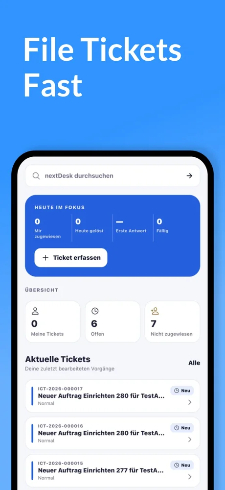
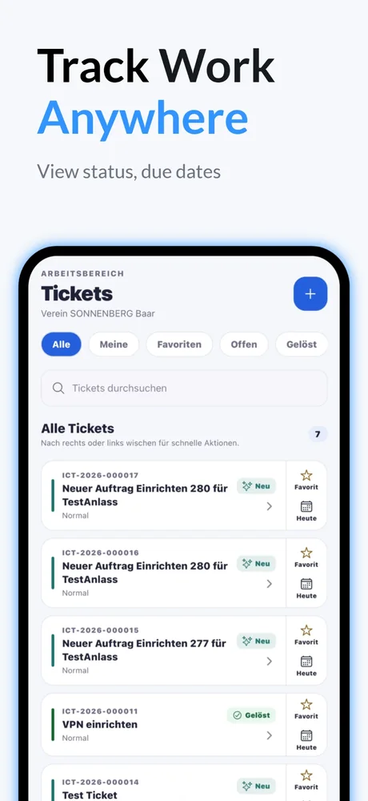
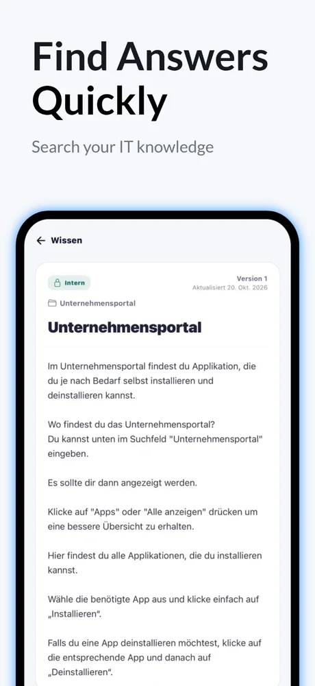
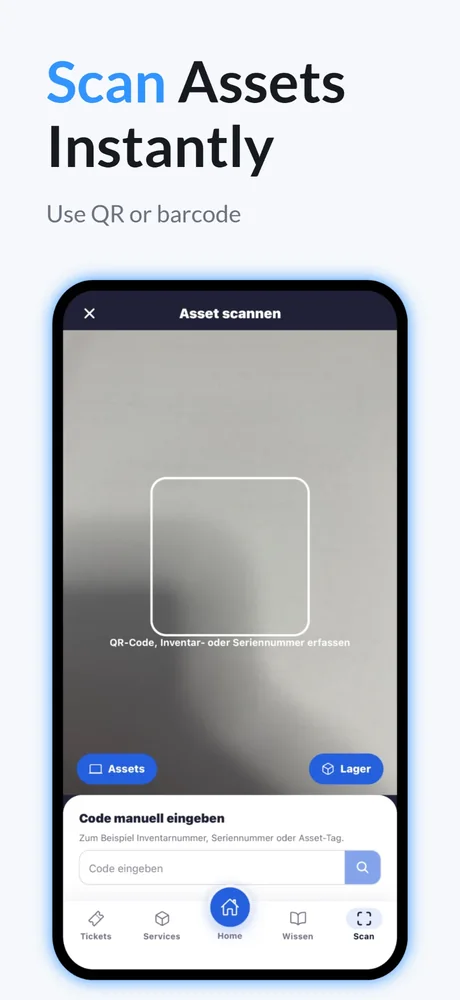
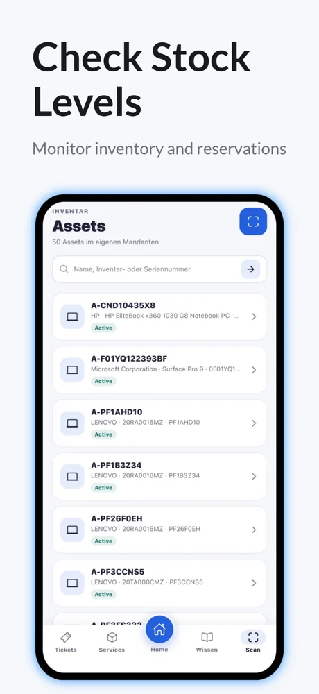

Service Desk für Schulen und Organisationen
Ihre IT im Griff. Von überall.
nextDesk bündelt Tickets, Wissen, Geräte, Lager, Raumplanung sowie Verträge und Lizenzen an einem Ort, im Browser und als App für das iPhone.
Entwickelt von Gross ICT · Anmeldung mit dem Konto Ihrer Organisation
Funktionen
Alles, was Ihr Service Desk braucht
Ein System statt vieler Listen und Postfächer. Jede Funktion arbeitet mit den anderen zusammen.
Tickets
Anfragen erfassen, zuweisen, beantworten und nachverfolgen, mit Fristen, Kommentaren, internen Notizen und Anhängen.
Wissen
Anleitungen und Antworten in einer durchsuchbaren Wissensdatenbank, damit sich viele Fragen von selbst lösen.
Assets und Lager
Geräte per QR-Code scannen, Bestände, Reservationen und Inventuren im Blick behalten.
Raumplanung
Technische Einrichtung für Aula und Sitzungszimmer planen. Anfragen per E-Mail werden automatisch übernommen.
Verträge und Lizenzen
Laufzeiten, Kosten, Kündigungsfristen und Dokumente erfassen. Rechtzeitig vor Ablauf erinnert ein Ticket.
Systemstatus
Eine öffentliche Statusseite zeigt, welche Dienste verfügbar sind, auch als Baustein für Ihr Intranet.
Tickets
Anfragen, die niemand vergisst
Jede Meldung landet an einem Ort, mit klarem Status und klarer Verantwortung. Ihr Team sieht auf einen Blick, was offen, fällig oder noch nicht zugewiesen ist.
- Tickets in Sekunden erfassen, auch mit Fotos
- Zuweisen, antworten und intern Notizen austauschen
- Favoriten und Filter für den schnellen Zugriff
Wissen
Antworten finden, bevor ein Ticket nötig ist
Ihre IT-Anleitungen stehen im Wissensspeicher bereit, intern oder für alle. Wer Hilfe sucht, findet sie in der App, ohne zu warten.
- Durchsuchbare Artikel mit Kategorien
- Interne und öffentliche Inhalte getrennt
- Aktualisierungsdatum immer sichtbar
Assets und Lager
Geräte scannen, Bestände prüfen
Halten Sie die Kamera auf den QR-Code oder Barcode. Sofort sehen Sie Gerät, Zustand und Standort. Im Lager behalten Sie Bestände und Reservationen im Blick.
- QR-Code, Barcode oder Inventarnummer
- Direkt zu Assets und Lager wechseln
- Bestände und Reservationen im Lager
Die App
nextDesk für das iPhone
Tickets, Wissen, Geräte und Lager auch unterwegs. Auf Wunsch schützt Face ID die Sitzung auf dem Gerät.





Sicherheit
Sicher und nachvollziehbar
Ihre Daten bleiben bei Ihrer Organisation. nextDesk trennt, schützt und protokolliert.
Getrennte Bereiche
Jede Organisation arbeitet in einem eigenen, getrennten Bereich. Daten sind nicht untereinander sichtbar.
Rollen und Rechte
Berechtigungen bestimmen, wer was sieht und ändert. Anmeldung mit dem Konto Ihrer Organisation, in der App optional mit Face ID.
Protokoll
Wichtige Änderungen werden festgehalten, damit nachvollziehbar bleibt, wer was wann getan hat.
Fragen zu nextDesk?
Wir helfen gern bei Fragen zur Anmeldung, zur App oder zum Einsatz in Ihrer Organisation.